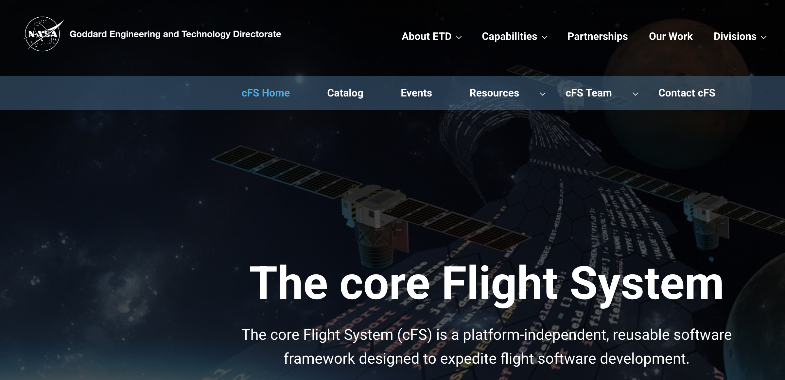
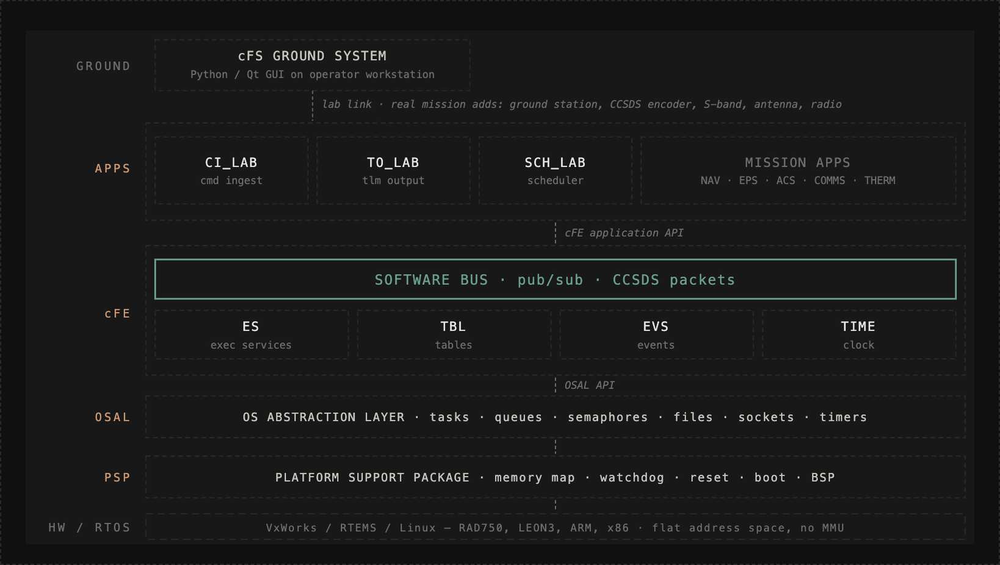
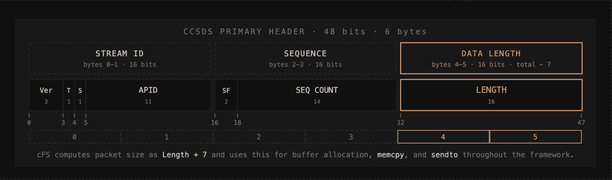
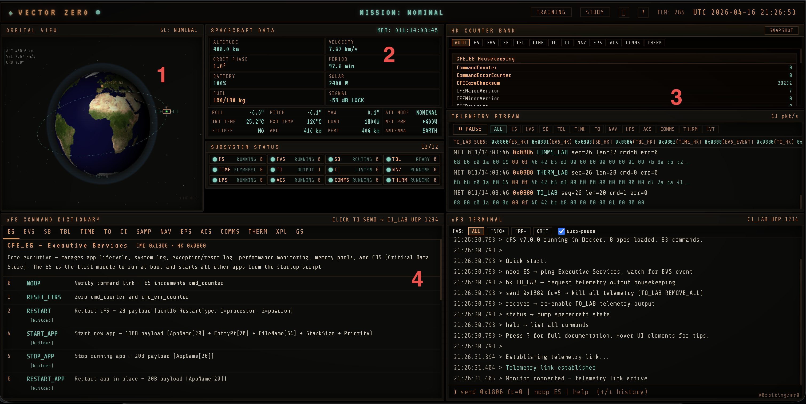
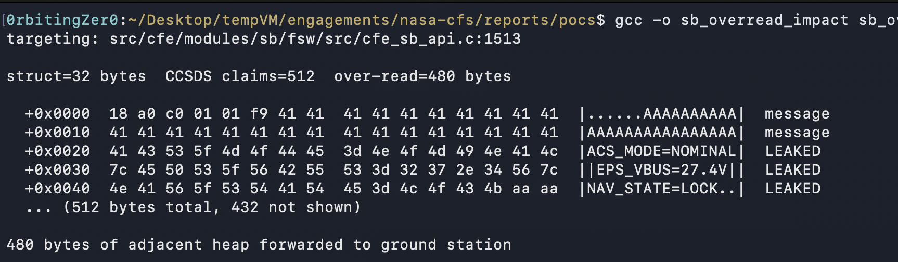
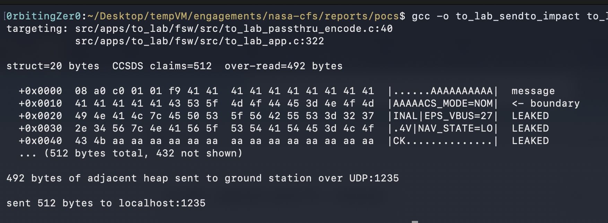
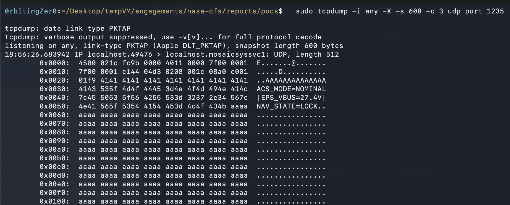
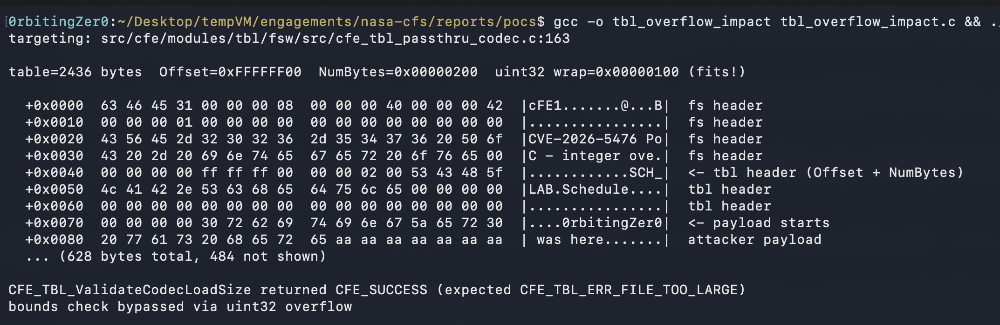
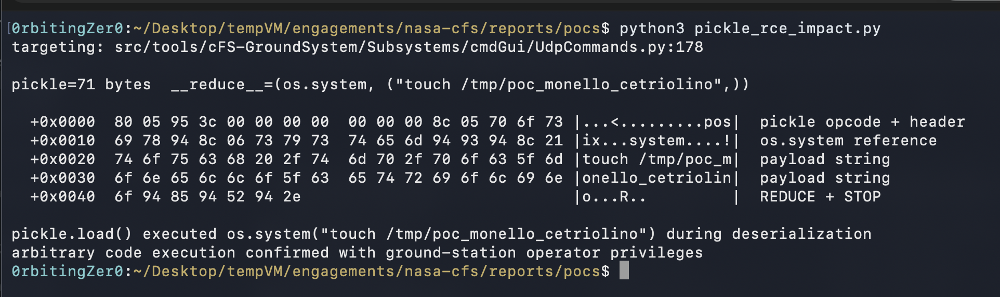

Space tech has always fascinated me, especially the low-level side of how spacecraft communicate. I wanted to understand it better, so a few weeks ago I decided to build a small simulator to explore space protocols and how telemetry moves between a spacecraft in orbit and the ground.
Question: where do you start?
NASA's core Flight System, built at Goddard Space Flight Center (GSFC), is the open source framework that has powered more than forty of their missions, from the two missions that started it (LRO and SDO) to more recent science missions like Parker Solar Probe. The Roman Space Telescope and the Lunar Gateway are coming up next. Before cFS existed, every mission built its flight software more or less from scratch, stitched together from heritage code. cFS changed that. One reusable framework, layered so engineers can build mission-specific applications on top. It handles messaging between applications, manages configuration tables, provides time services, logs events, and abstracts away the underlying hardware and real-time OS.

So I tried to wire everything together: a small cFS Docker build running the default cFE services, five mission apps (ACS, EPS, thermal, comms, nav), a ground station talking CCSDS over UDP (via CI_LAB and TO_LAB for I/O), and a mission control dashboard where I can send commands and watch telemetry stream back from the Software Bus.
Before we get into that, it helps to walk through how the framework is put together. Trust me.
The cFS: 101

cFS has four layers. At the bottom, the Platform Support Package (PSP) wraps the hardware. It handles memory mapping, watchdog timers, reset logic, and boot. Above it sits the OS Abstraction Layer (OSAL), which exposes the underlying RTOS: tasks, queues, files, sockets, timers. Together these two hide the platform specifics, so the higher layers run the same on VxWorks, RTEMS, or Linux.
Above OSAL sits the core Flight Executive (cFE). It provides the shared services every application depends on: a Software Bus for message routing, Executive Services for app lifecycle, Event Services for event logging with severity filtering, and Time Services. Table services handle runtime configuration. That's how flight software gets reconfigured without redeploying code (things like sensor thresholds).
On top of all that, applications plug in. They handle command ingestion, telemetry output, and any mission-specific functionality. cFS ships with three default "lab" apps that fill the generic roles out of the box: CI_LAB for command ingest, TO_LAB for telemetry output, and SCH_LAB for scheduling. Mission teams add their own apps alongside these on the same bus: navigation, electrical power (EPS), attitude control (ACS), comms, and thermal.
What's left is the ground side. A ground system sends commands to the flight software over UDP. Real missions use all sorts of tools here: COSMOS, ITOS, ASIST. The cFS repo ships a reference implementation called cFS-GS, a Python/Qt GUI, but that's one option among many. CI_LAB receives the UDP packets and puts them on the Software Bus. TO_LAB does the reverse: it reads messages from the SB and sends them over UDP to the ground station.
Lastly, every cFS command has a MsgID (its routing key on the Software Bus) and a function code (FC, which picks the operation within the app). For example, CFE_TBL_LOAD_CC is MsgID 0x1804 with FC=2. MsgID lives in the primary header; FC lives in the secondary header that follows, on command packets.
The Software Bus is the main character here. Every cFS application communicates by publishing and subscribing to messages on the bus. No direct function calls between applications. Each message is wrapped in CCSDS space packet headers.

The primary header is 6 bytes across three 16-bit words: Stream ID, Sequence Control, and Data Length. The Length field is the one that matters here. It's 2 bytes, encoding total packet size minus 7: 6 for the primary header, and 1 more because CCSDS encodes Length as (data-field-octets − 1). cFS trusts that number everywhere: memcpy sizes, sendto lengths, buffer allocations. Nothing along the way double-checks it.
In mission operations, the command path runs like this:
operator workstation → ground system GUI → CCSDS encoder → uplink → spacecraft antenna → CI_LAB → Software Bus → apps.
The Lab
The UI is organised into four panels.

[1] Orbital view: a spacecraft in a low Earth orbit, a ground station in London, and comm beams that go dark when the antenna stows or the signal drops. The spacecraft also tumbles when the Attitude Control System (ACS) loses control of its orientation.
[2] Main instrument cluster: eight cells (altitude, velocity, orbit phase, period, battery, solar input, fuel and signal strength) and below them a grid showing each running cFS component (ES, EVS, SB, TBL, TIME, TO and CI) and the five mission apps (NAV, EPS, ACS, COMMS and THERM).
[3] Raw telemetry downlink. The upper half is a live housekeeping decoder: every housekeeping packet that comes off the Software Bus gets parsed and displayed field by field. The lower half is the packet stream itself: MsgID, sequence number, length, and a hex dump with the CCSDS primary headers and payload.
[4] Dictionary and terminal: every cFE, mission, and lab command, with function codes and payload sizes. Next to it, a terminal shows command packets going out and telemetry responses coming back.
From the terminal you can send raw CCSDS commands or fire high-level actions (burns, attitude slews, panel retracts and antenna stows). Every command goes out as a real UDP packet to CI_LAB, and the flight software's telemetry and EVS events stream back onto the dashboard live. A MISSION banner at the top flips CRITICAL or DEGRADED when the spacecraft state crosses operational limits.
Note that the idea was to build a telemetry tool. Housekeeping packets from cFS flight applications drive the altitude, fuel, and orbit readouts. The only physics in the loop is the velocity tracks altitude through vis-viva and burns consume fuel per delta-v. Beyond that, the spacecraft state isn't a physics simulation. The goal is only to show what an exploit does to the telemetry you see.
Once it was up and running, with commands flowing and telemetry streaming back, I started reading, analysing and injecting through the cFS source to understand what was happening to the packets.
CCSDS header size trusted from SB to ground
The first place I looked was the Software Bus, since every message has to pass through it. CFE_SB_TransmitMsg (cfe_sb_api.c:1472) is the centre of gravity: everything published on the bus runs through it.
CFE_Status_t CFE_SB_TransmitMsg(const CFE_MSG_Message_t *MsgPtr, bool IsOrigination)
A message pointer and an origination flag, no source buffer size. The function has no way to know how large the caller's buffer is, so the only size it can use is the one baked into the message: the CCSDS Length field. From there I traced through what the function does with each message.
CVE-2026-5475: CFE_SB_TransmitMsg memory corruption
The first thing it does, at cfe_sb_api.c:1484, is to hand off to CFE_SB_TransmitTxn_SetupFromMsg to extract the message size. That function calls CFE_MSG_GetSize and stores the result via CFE_SB_MessageTxn_SetContentSize:
Status = CFE_MSG_GetSize(MsgPtr, &MsgSize);
if (Status == CFE_SUCCESS)
{
CFE_SB_MessageTxn_SetContentSize(TxnPtr, MsgSize);
}
CFE_MSG_GetSize reads the two Length bytes from the CCSDS primary header and adds 7 (CFE_MSG_SIZE_OFFSET):
*Size = (MsgPtr->CCSDS.Pri.Length[0] << 8) + MsgPtr->CCSDS.Pri.Length[1] + CFE_MSG_SIZE_OFFSET;
It does this with no validation or bounds check. Whatever the CCSDS header claims becomes the transaction's content size.
Back in CFE_SB_TransmitMsg, at cfe_sb_api.c:1491, it allocates a new SB buffer at exactly that size. The size comes from CFE_SB_MessageTxn_GetContentSize:
BufPtr = CFE_SB_AllocateMessageBuffer(CFE_SB_MessageTxn_GetContentSize(Txn));
The destination was sized to match the claim. Then at cfe_sb_api.c:1513, still inside CFE_SB_TransmitMsg, the copy fires:
memcpy(&BufPtr->Msg, MsgPtr, CFE_SB_MessageTxn_GetContentSize(Txn));
The source is the caller's actual buffer, and nothing checks that the two match. If the Length field says 1024 bytes but the caller's struct is 32, the memcpy reads 992 bytes past the caller's buffer and copies them into the SB buffer. Every subscriber of that message ID then gets a pointer to that buffer and reads it using the same CCSDS-derived size.
On flat-memory RTOS deployments there are no hardware boundaries between applications. Adjacent memory belongs to whoever the allocator put there last. The SB does cap each message at 32KB, but that's still far larger than any real struct.
A small PoC confirms it. Allocate 32 bytes, set the CCSDS header to claim 512, and the memcpy reads 480 bytes of adjacent memory into the SB buffer. ASan catches the over-read:

So the SB buffer now contains leaked memory. Where does that buffer go?
CVE-2026-5474: CFE_MSG_GetSize heap-based overflow
The SB delivers the buffer to every subscriber of the message ID. In a default cFS lab, the most interesting subscriber is TO_LAB. It reads everything off the telemetry pipe and forwards it over UDP to the ground station. Real missions typically replace TO_LAB with a mission-specific encoder. This vulnerability specifically requires TO_LAB's passthrough encode path (to_lab_passthru_encode.c:40).
CFE_Status_t TO_LAB_EncodeOutputMessage(const CFE_SB_Buffer_t *SourceBuffer,
const void **DestBufferOut, size_t *DestSizeOut)
{
CFE_Status_t ResultStatus;
CFE_MSG_Size_t SourceBufferSize;
ResultStatus = CFE_MSG_GetSize(&SourceBuffer->Msg, &SourceBufferSize);
*DestBufferOut = SourceBuffer;
*DestSizeOut = SourceBufferSize;
return ResultStatus;
}
TO_LAB's encode reads the CCSDS Length via CFE_MSG_GetSize and forwards it as the send size, with no validation. The only cap is the SB's 32KB ceiling, applied before the buffer is ever allocated.
If an app publishes 512 bytes from a 20-byte struct, the check passes, and TO_LAB's encode hands the result to OS_SocketSendTo:
CfeStatus = TO_LAB_EncodeOutputMessage(SBBufPtr, &NetBufPtr, &NetBufSize);
if (CfeStatus != CFE_SUCCESS) { ... }
else {
OsStatus = OS_SocketSendTo(TO_LAB_Global.TLMsockid, NetBufPtr, NetBufSize, &d_addr);
}
An attacker-controlled length determines how many bytes TO_LAB ships over UDP, bounded only by the SB's 32KB cap. TO_LAB isn't reading out of bounds itself. It trusts the CCSDS Length and transmits whatever 5475 already deposited in the SB buffer.
That's why these are two CVE IDs for one root cause. It might be that the fix has not landed as CFE_SB_TransmitMsg has dozens of call sites in the cFS bundle alone, with more in every mission codebase built on top.
I checked if this could be triggered from outside. CI_LAB's passthrough decode (ci_lab_passthru_decode.c:95-97) drops any packet whose CCSDS Length is bigger than the bytes received on the socket. So the chain needs an app already on the bus.
TO_LAB sends to a fixed IP (TO_LAB_Global.tlm_dest_IP, set via the EnableOutput command). The leaked data goes to the configured ground station, not to the attacker. That means exploitation also needs network access to the ground station, or a prior compromise of it.
We can draft a quick PoC to confirm. This one skips the SB and calls TO_LAB_EncodeOutputMessage directly on a 20-byte struct. The kernel itself over-reads 492 bytes of adjacent memory during OS_SocketSendTo. In the full chain, the over-read has already happened upstream in 5475, and TO_LAB ships what's sitting in the (oversized) SB buffer.


lab demo
In the video I start by typing status to show the spacecraft in a clean state: altitude 408 km, fuel 150 kg. Then noop NAV_LAB, which sends a command to the nav app and gets an EVS event back confirming it's alive and listening.
The TRIGGER command itself is a normal, well-formed CCSDS packet. CI_LAB validates it and forwards it onto the Software Bus. XPL_LAB, a custom exploit app on the bus, subscribes to TRIGGER (MsgID 0x18A0, FC=2). When it fires, it publishes two things straight back onto the SB: a malformed message on MsgID 0x08A0 with an inflated CCSDS Length (the leak) and a NAV_LAB BURN command (so we can see the silent leak next to a visible command). Neither passes through CI_LAB's ingress check.
The first thing that appears is the anomaly: an XPL_LAB packet claiming 512 bytes when the struct is 20. The extra 492 bytes are adjacent memory that TO_LAB forwards over UDP to the ground station. Right after, a NAV_LAB EVS event fires. Altitude starts dropping, fuel ticks down, thruster shows FIRING.
CVE-2026-5476: CFE_TBL_ValidateCodecLoadSize integer overflow
After hunting through the SB, I started wondering if anything else in cFS reads a size field from outside. The table service was worth a check. Tables hold runtime configuration like sensor thresholds and scheduler timings. Updates come from .tbl files on the flight filesystem. cFS loads them at boot (via CFE_TBL_FILEDEF) or at runtime when the ground sends CFE_TBL_LOAD_CC (MsgID 0x1804, FC=2). Each .tbl file has its own header, separate from CCSDS. Two fields matter: Offset (where in the target buffer the data should land) and NumBytes (how many bytes to write).
This time the bounds check exists. Before any file data gets written, CFE_TBL_ValidateCodecLoadSize() runs. The function is defined at cfe_tbl_passthru_codec.c:155, and the overflow site is at line 163 (cFE submodule pin 70b80172, which is what the main repo points at as of this writing).
uint32 ProjectedSize;
ProjectedSize = HeaderPtr->Offset + HeaderPtr->NumBytes;
if (ProjectedSize > ActualSize)
{
/* reject as too large */
}
Both Offset and NumBytes come from the table file header. Both are uint32. So if you pick two values that overflow past 2^32 but wrap back to something small, the check compares the wrap (not the true sum) against ActualSize.
For example, Offset = 0xFFFFFF00 and NumBytes = 0x200:
Offset = 0xFFFFFF00 (4,294,967,040)
NumBytes = 0x00000200 (512)
True sum = 0x100000100 (4,294,967,552)
uint32 wrap = 0x00000100 (256)
If the table size is 256 bytes, ProjectedSize (256) passes the > ActualSize (256) check. The bounds check is defeated.
The same Offset also flows into CFE_TBL_LoadContentFromFile (callers at cfe_tbl_load.c:654 and cfe_tbl_task_cmds.c:416). That function runs its own bounds check at cfe_tbl_load.c:252:
LoadTailSize = Offset + NumBytes;
if (LoadTailSize > CFE_TBL_LoadBuffGetAllocSize(WorkingBufferPtr))
{
/* CFE_TBL_FILE_TOO_BIG_ERR_EID (event 75) */
}
LoadTailSize is a size_t. On 32-bit flight hardware, size_t is 32 bits, so the sum wraps exactly like the first one. Both checks pass. On 64-bit Linux, size_t is 64 bits. The sum doesn't wrap, and this check catches the load.
When both checks are gone, the loader is free to write. But where?
It targets staging_buffer + Offset. Offset is 0xFFFFFF00, almost 4GB. On 32-bit systems, addresses only go up to 4GB. Adding a number that big to a pointer wraps around. As 0xFFFFFF00 equals 2^32 − 256, adding it to a pointer is the same as subtracting 256.
From that address, OS_read() writes 512 bytes: the first 256 land just before the staging buffer, the last 256 land inside it. Different Offset values shift this window, but always near the staging buffer.
One more catch. That staging buffer isn't the live table. The load lands in a staging slot (the LoadInProgress one). The live table, the one flight software actually reads, only gets swapped in when someone sends CFE_TBL_ACTIVATE_CC. Until that command fires, the OOB data just sits there.
We can prove the bypass on its own. Build a .tbl file with Offset=0xFFFFFF00 and NumBytes=0x200. Call CFE_TBL_ValidateCodecLoadSize directly on a 2436-byte table. The check returns CFE_SUCCESS instead of CFE_TBL_ERR_FILE_TOO_LARGE:

That proves the bypass, not that the write lands.
The full chain is hard to pull off. An attacker needs three things. First, the authority to send CFE_TBL_LOAD_CC. Second, a way to get the malicious .tbl onto the flight filesystem (usually an FTP service or a pre-staged file from a compromised build). Third, an operator who eventually sends CFE_TBL_ACTIVATE_CC to swap the corrupted buffer in. With all three, a compromised ground station should be able to write attacker-controlled data into the target table and into whatever sits in memory right before its buffer.
lab demo
The lab runs on 64-bit Linux, so the OOB write doesn't land here. The video shows what a successful 5476 exploit would look like in practice: scripted commands replay what a corrupted scheduler table would do to the spacecraft.
I start again with status to show the spacecraft in a clean state: attitude NOMINAL, solar ~2400W, full battery, signal showing LOCK. Then inject 5476 fires a TBL LOAD command for /cf/malicious.tbl and queues up a scripted follow-up.
The first thing on screen is the TBL event: CFE_TBL (Event 60): LoadFile,app=CFE_TBL,tbl=SCH_LAB.Schedule:No working buffers available. This event only fires if CFE_TBL_ValidateCodecLoadSize already returned CFE_SUCCESS. That means the uint32 wrap worked.
I tried to replicate a denial over time: recurring retrograde burns, a panel retract, and an antenna stow, so you can watch altitude, power, and the ground link all degrade on the same timeline.
Eight seconds after the table load, a retrograde NAV_LAB BURN dv=15.0 fires. Altitude drops and velocity climbs with it. A few seconds later, EPS_LAB PANELS RETRACT runs. Solar arrays stow and battery starts draining. Another BURN. Finally, COMMS_LAB ANTENNA STOW cuts the ground link. Signal flips to NOLOCK.
CVE-2026-5473: pickle.load deserialization
As we saw, every CCSDS packet we've been tracking starts life on a ground station. The cFS Ground System is a Python/Qt GUI that operators use to send commands to the flight software over UDP. It runs on the operator's workstation, typically a machine on the Mission Operations Center network, and loads command and parameter definitions from files on disk. At the cFS-GroundSystem commit currently pinned in nasa/cFS main (2e004a6), those files are Python pickle files, loaded like this.
UdpCommands.py (lines 68-69, 177-178):
with open(pickle_file, 'rb') as pickle_obj:
cmd_desc, cmd_codes, param_files = pickle.load(pickle_obj)
Same pattern in CommandSystem.py (lines 71-72) and Parameter.py (lines 130-132).
Python's pickle module executes arbitrary code during deserialization. A malicious pickle can specify os.system as the callable and an arbitrary shell command as the argument. Python's own documentation warns: "Only unpickle data you trust."
We can show it with a quick Python script. Build a MaliciousPickle class whose __reduce__ returns (os.system, ("touch /tmp/poc_monello_cetriolino",)). Dump it to a .pkl file, then call pickle.load() on it the same way UdpCommands.py:178 does.

pickle.load on untrusted files is a well-known vector. An attacker who can write to the CommandFiles/ or ParameterFiles/ directories gets arbitrary code execution with the ground station operator's privileges when they open the command GUI. Write access can come from a supply chain compromise, a shared filesystem, or another file-write vulnerability.
lab demo
gsload tells the ground station container to run its real pickle.load() code path from UdpCommands.py:178 on a pre-staged malicious .pkl file in CommandFiles/. That's the same vulnerable call an operator would trigger by opening the command GUI. pickle.load() executes os.system() and a marker file appears as proof of RCE.
Once the shell command lands, the compromised ground station chains three valid CCSDS commands through CI_LAB: ACS_LAB SET_MODE TUMBLE (0x18B4 FC=3), EPS_LAB PANELS RETRACT (0x18B2 FC=2) and COMMS_LAB ANTENNA STOW (0x18B6 FC=2). cFS executes them the same way it would for a legitimate operator.
Within two seconds the dashboard flips: attitude NOMINAL to TUMBLE, solar 2400W to 0W, signal LOCK to NOLOCK.
Impact
CVE-2026-5475 and CVE-2026-5476 are in the core cFE framework, shared by any mission without local patches. CVE-2026-5474 is in TO_LAB, which the bundle ships as an example app. Missions that need operational telemetry output typically replace it. CVE-2026-5473 is in cFS-GroundSystem, a ground tool NASA documents in the cFS quickstart. Missions running COSMOS, ITOS, or ASIST don't inherit it.
5475 lets an app on the bus leak up to 32KB of flight software memory into an SB buffer, and every subscriber sees that buffer. If TO_LAB is still the one sending telemetry out, those bytes go straight over UDP to the ground station. As far as my understanding goes, you need an app already on the bus to start the chain, and nothing from the network can reach it.
5476 only matters on 32-bit flight hardware. The out-of-bounds write happens during the TBL LOAD, not at activation. Activation swaps the corrupted staging buffer into the live table, and the flight software starts reading it from there. To pull off the chain you need CFE_TBL_LOAD_CC authority, a crafted .tbl on the flight filesystem, and eventually a CFE_TBL_ACTIVATE_CC from the operator.
5473 is arbitrary code execution on the ground station operator's machine. It fires when the GUI opens a page and loads its .pkl from CommandFiles/ or ParameterFiles/. You need write access to one of those directories. Once your code runs on the operator's box, anything you send to the spacecraft looks the same as a real command to cFS.
I contacted NASA Goddard Space Flight Center (GSFC), which gave the green light to publish. Some of these will be patched in the coming weeks.
Till next time 🚀
Timeline
| Date | Event |
|---|---|
| 2026-03-18 | Reported via GitHub Security Advisories: nasa/cFS#951, nasa/cFS#952, nasa/cFS#953, nasa/cFE#2692 |
| 2026-04-03 | CVE-2026-5473, CVE-2026-5474, CVE-2026-5475, CVE-2026-5476 assigned |
| 2026-04-13 | NASA cFS Product Development acknowledged and approved to publish via email |